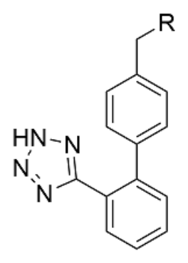
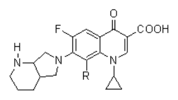

開卷有益 ／
藥師 ／ 藥理學與藥物化學 ／ 110 年第 1 次110 年第 1 次藥師藥理學與藥物化學試題與答案
這一頁是民國 110 年第 1 次藥師藥理學與藥物化學的整份歷屆試題，共 80 題，題目與標準答案出自考選部「國家考試試題及測驗式試題答案」開放資料，其中 70 題附有詳解。以下逐題列出題幹、選項與答案；要計時作答或記錄成績，請用線上練習。
考選部原始場次代碼：110020
線上作答這一科 →
全部 80 題
第 1 題
口服藥物時，鹼性藥物較酸性藥物易留在胃中，此現象的主要原因為何？
（A） 鹼性藥物較耐酸性，不易分解（B） 鹼性藥物會抑制胃分解酶的分泌（C） 鹼性藥物易與脂溶性食物結合（D） 鹼性藥物在胃中帶正電荷不易吸收答案：（D）
詳解與考點 正解：胃腔 pH 偏酸時，鹼性藥物容易接受質子而成為帶正電荷的離子型。離子型穿過脂質細胞膜的能力較低，因此在胃中較不易被吸收而滯留；（D）正確，故選 D。
A：耐酸性影響藥物是否被胃酸分解，不能解釋鹼性藥物比酸性藥物更易留在胃中的分布差異。分辨關鍵是電離狀態，不是化學安定性。
B：鹼性藥物滯留胃中的主要機轉不是抑制胃分解酶分泌，而是酸性環境造成的質子化與膜通透性下降。
C：與脂溶性食物結合不是此現象的共同必要條件，也不能說明為何酸性胃液會選擇性使鹼性藥物較不易吸收。
本題考點：離子陷阱（ion trapping）——弱鹼進入酸性環境後易質子化而滯留，弱酸在較鹼性環境則有相反趨勢；pH 分配假說（pH-partition hypothesis）——判斷跨膜吸收時，先看藥物在當下 pH 下是否以未解離、較脂溶的型態存在。
第 2 題
下列何者是Gs-coupled受體？
（A） V2 receptor（B） 5-HT3 receptor（C） histamine H1 receptor（D） rhodopsin答案：（A）
詳解與考點 正解：V2 receptor 是 Gs-coupled 受體，活化後刺激 adenylyl cyclase，使 cAMP 上升；因此（A）正確，故選 A。
B：5-HT3 receptor 是配體門控離子通道，不是經 G 蛋白傳遞訊號的受體。它看似同為受體命名，但受體家族與下游訊號完全不同。
C：histamine H1 receptor 主要與 Gq 偶聯，經 phospholipase C 增加 IP3 與 DAG，不是經 Gs 增加 cAMP。
D：rhodopsin 雖是 G protein-coupled receptor，卻與 Gt（transducin）偶聯；判斷 Gs-coupled 時不能把所有 GPCR 歸為同一型。
本題考點：G 蛋白偶聯受體（G protein-coupled receptor）——先由受體辨認 Gs、Gi、Gq 或 Gt，再推下游第二訊使；Gs-cAMP 訊號（Gs-cAMP signaling）——Gs 活化 adenylyl cyclase 並提高 cAMP，與 Gq 的 IP3/DAG 路徑區分。
第 3 題
依定義如ED50表示藥物之median有效劑量（median effective dose），而LD50表示其median致死劑量（median lethal dose），則下列何藥之治療指數（therapeutic index）最小？
（A） ED50 = 0.1；LD50 =1（B） ED50 = 1；LD50 = 5（C） ED50 = 5；LD50 = 10（D） ED50 = 10；LD50 = 30答案：（C）
詳解與考點 正解：治療指數以 TI = LD50 / ED50 計算，數值越小表示致死劑量與有效劑量的距離越近。逐一代入：（A）TI = 1 / 0.1 = 10；（B）TI = 5 / 1 = 5；（C）TI = 10 / 5 = 2；（D）TI = 30 / 10 = 3。最小值為（C）的 2，故選 C。
A：（A）的 TI 為 10，表示 LD50 是 ED50 的 10 倍，安全範圍比（C）的 TI 為 2 大，並非最小。
B：（B）的 TI 為 5。雖低於（A），但仍高於（C）的 2，不能只比較 LD50 的絕對數值而忽略 ED50。
D：（D）的 TI 為 3，僅次於（C）的 2。分辨關鍵是計算比值，不是看 ED50 或 LD50 哪一個較大。
本題考點：治療指數（therapeutic index）——以 TI = LD50 / ED50 計算，數值越小代表安全範圍越窄；劑量標準化比較（dose-normalized comparison）——比較不同藥物的風險時，必須以 LD50 與 ED50 的比值而非單一劑量判斷。
第 4 題
有關抗反轉錄病毒藥物（antiretroviral agents）與作用機轉配對，下列何者錯誤？
（A） maraviroc結合到宿主細胞CCR5蛋白質而阻斷病毒的進入（B） atazanavir為蛋白酶抑制劑可以阻斷病毒膜蛋白與宿主細胞膜融合以防止病毒進入（C） didanosine為抑制病毒反轉錄酶活性進而阻斷病毒DNA合成（D） dolutegravir結合到病毒嵌入酶而阻斷病毒DNA嵌合到宿主染色體答案：（B）
詳解與考點 正解：抗反轉錄病毒藥物的配對要先分清病毒進入、反轉錄、嵌入與成熟等步驟。atazanavir 為 HIV protease inhibitor，阻斷的是病毒多蛋白切割與成熟，不是病毒膜蛋白和宿主細胞膜的融合；（B）配對錯誤，故選 B。
A：maraviroc 結合宿主細胞的 CCR5 共受體，阻止使用 CCR5 的病毒進入細胞，配對正確。
C：didanosine 為 nucleoside reverse transcriptase inhibitor，抑制反轉錄酶後會妨礙病毒 DNA 的合成，配對正確。
D：dolutegravir 為 integrase strand transfer inhibitor，抑制病毒 DNA 嵌入宿主染色體，配對正確。
本題考點：HIV 蛋白酶抑制劑（HIV protease inhibitors）——判斷時連到病毒成熟與多蛋白切割，不要與融合抑制混淆；抗反轉錄病毒治療靶點（antiretroviral drug targets）——CCR5 管進入、reverse transcriptase 管 DNA 合成、integrase 管染色體嵌入，依感染週期定位。
第 5 題
有關aminoglycosides類抗生素抗藥性敘述，下列何者正確？
（A） gentamicin對鏈球菌及腸球菌效用較差主要是因為對細菌核糖體作用差（B） vancomycin可以促進gentamicin效用是因為增進gentamicin在細菌中的藥物攝取量（C） 對streptomycin已產生抗藥性的結核分枝桿菌通常也對amikacin有交互抗藥性（D） 若產生kanamycin與neomycin交互抗藥性，並不會進一步導致對amikacin的抗藥性產生答案：（B）
詳解與考點 正解：aminoglycosides 進入細菌需要跨越細胞包膜；vancomycin 抑制細胞壁合成後可增加 gentamicin 進入細菌的攝取量，形成協同作用。因此（B）正確，故選 B。
A：gentamicin 對鏈球菌與腸球菌效用較差，主要與藥物進入細菌的能力受限有關，不是因為其對核糖體的作用特別差。兩者的 30S 核糖體仍是 aminoglycosides 的作用位置。
C：結核分枝桿菌對 streptomycin 的抗藥性，不會通常自動推論對 amikacin 也有交互抗藥性；不同 aminoglycosides 的抗藥性須看特定靶點或修飾酶。
D：kanamycin 與 neomycin 的交互抗藥性可能涉及可影響 amikacin 的 aminoglycoside-modifying enzymes，不能用「並不會」作絕對排除。
本題考點：aminoglycosides 協同作用（aminoglycoside synergy）——與破壞細胞壁的藥物併用時，先判斷是否增加 aminoglycoside 進入菌體；aminoglycoside 抗藥性（aminoglycoside resistance）——交互抗藥性取決於特定修飾酶或靶點改變，不可由同類藥名直接一概而論。
第 6 題
下列關於抗癌藥物之敘述，何者正確？
（A） vinblastine及gemcitabine都是從植物中衍生出來（B） capecitabine及sorafenib皆屬於抑制代謝藥物（C） etoposide及topotecan皆能抑制拓墣異構酶（topoisomerase）（D） 因腫瘤DNA錯配修復（mismatch repair）缺失導致carboplatin產生抗藥性情形下，同時也會對oxaliplatin有抗 藥性答案：（C）
詳解與考點 正解：兩藥皆能抑制拓墣異構酶時，仍要辨認各自抑制的型別。etoposide 抑制 topoisomerase II，topotecan 抑制 topoisomerase I，兩者均屬拓墣異構酶抑制劑；（C）正確，故選 C。
A：vinblastine 為植物衍生的 vinca alkaloid，但 gemcitabine 為核苷類抗代謝藥物，不能將兩者都歸為植物衍生。
B：capecitabine 為 5-fluorouracil 的前驅藥，屬抗代謝藥物；sorafenib 則為多激酶抑制劑。兩者同為口服抗癌藥，作用類別卻不同。
D：腫瘤 mismatch repair 缺失可改變對 carboplatin 的反應，但不能因此直接推論必然同時對 oxaliplatin 產生交互抗藥性；兩種鉑類藥物的 DNA 損傷辨識與反應並非完全相同。
本題考點：拓墣異構酶抑制劑（topoisomerase inhibitors）——etoposide 對 topoisomerase II、topotecan 對 topoisomerase I，先辨認型別再判斷配對；抗癌藥分類（anticancer drug classes）——同為口服或同用於癌症不代表同一機轉，須以直接靶點分類。
第 7 題
下列何種藥物是藉由調控T細胞活性來抑制腫瘤生長？
（A） nivolumab（B） bevacizumab（C） trastuzumab（D） rituximab答案：（A）
詳解與考點 正解：nivolumab 為 anti-PD-1 antibody，解除 PD-1 對 T 細胞的抑制訊號，使 T 細胞活性得以恢復並抑制腫瘤生長；（A）正確，故選 A。
B：bevacizumab 主要結合 VEGF，抑制腫瘤血管新生，不是直接藉由調控 T 細胞活性達效。
C：trastuzumab 的標的為 HER2，藉抑制 HER2 訊號及相關免疫效應治療特定腫瘤；它看似也是單株抗體，但不是 T 細胞檢查點調控藥物。
D：rituximab 結合 B 細胞表面的 CD20，主要造成 B 細胞耗竭，與解除 T 細胞 PD-1 抑制的機轉不同。
本題考點：免疫檢查點抑制劑（immune checkpoint inhibitors）——見到 PD-1 或 PD-L1 時，判斷其為解除 T 細胞抑制的治療；單株抗體標的辨識（monoclonal antibody targets）——先由 VEGF、HER2、CD20 或 PD-1 的標的反推主要抗腫瘤機轉。
第 8 題
下列抗黴菌藥物何者可抑制β-glucan synthase導致黴菌細胞壁生成受阻而殺菌？
（A） amphotericin B（B） caspofungin（C） fluconazole（D） terbinafine答案：（B）
詳解與考點 正解：抑制 β-1,3-D-glucan synthase 是 echinocandins 的特徵機轉，會妨礙黴菌細胞壁生成。caspofungin 屬此類藥物，故（B）正確，故選 B。
A：amphotericin B 結合黴菌細胞膜的 ergosterol 並形成孔洞，作用位置是細胞膜，不是 β-glucan synthase。
C：fluconazole 抑制 lanosterol 14α-demethylase，減少 ergosterol 合成；它同樣影響膜成分，但不是直接阻斷細胞壁的 glucan 合成。
D：terbinafine 抑制 squalene epoxidase，屬 ergosterol 生合成上游抑制，作用靶點亦非 β-glucan synthase。
本題考點：echinocandins（echinocandins）——遇到 β-1,3-D-glucan synthase 與細胞壁時，優先選此類；抗黴菌藥物靶點（antifungal drug targets）——細胞壁 glucan、細胞膜 ergosterol 與 ergosterol 生合成酶必須分開判斷。
第 9 題
下列藥物中何者為抗生素，並且可藉由抑制癌細胞之topoisomerase II而達到抗癌作用 ？
（A） bleomycin（B） amikacin（C） doxorubicin（D） oxaliplatin答案：（C）
詳解與考點 正解：題幹同時限定「抗生素」與「抑制癌細胞 topoisomerase II」。doxorubicin 是 anthracycline 類抗腫瘤抗生素，可嵌入 DNA 並干擾 topoisomerase II，故（C）正確，故選 C。
A：bleomycin 也是抗腫瘤抗生素，容易成為誘答；但它主要經自由基造成 DNA 鏈斷裂，不是以抑制 topoisomerase II 為主要機轉。
B：amikacin 為抗菌用 aminoglycoside，抑制細菌 30S 核糖體，既非抗癌藥亦非癌細胞 topoisomerase II 抑制劑。
D：oxaliplatin 為鉑類抗癌藥，主要形成 DNA 交聯；雖可治療癌症，但不是抗腫瘤抗生素，也不以 topoisomerase II 為直接標的。
本題考點：anthracycline 類（anthracyclines）——見到 doxorubicin 時連結 DNA intercalation 與 topoisomerase II 抑制；抗腫瘤抗生素（antitumor antibiotics）——同類藥仍須按 DNA 斷裂、嵌入或拓墣異構酶作用分辨。
第 10 題
抗體藥物basiliximab主要應用於急性器官排斥之預防性用藥，更可與其他免疫抑制劑適當併用。有關此藥之 作用機制，下列敘述何者正確？
（A） 結合活化型淋巴細胞之IL-2受體（α鏈）（B） 結合細胞膜及游離態之IL-6受體（C） 結合IL-1受體（D） 結合游離態之TNF-α答案：（A）
詳解與考點 正解：basiliximab 用於急性器官排斥的預防，標的是活化型 T lymphocytes 上的 IL-2 receptor α chain，也就是 CD25；（A）正確，故選 A。
B：結合細胞膜及游離態 IL-6 receptor 是阻斷 IL-6 訊號的藥物機轉，與 basiliximab 的 IL-2 receptor α chain 標的不同。
C：IL-1 receptor 的阻斷屬另一類抗發炎策略，不能因同為 interleukin receptor 就與 basiliximab 混同。
D：結合游離態 TNF-α 是 anti-TNF 藥物的機轉，主要訊號與 basiliximab 阻斷 T 細胞 IL-2 受體不同。
本題考點：basiliximab（basiliximab）——看到器官移植排斥預防時，連結活化 T 細胞的 CD25；IL-2 receptor α chain（CD25）——阻斷此受體可抑制 IL-2 驅動的 T 細胞增殖，與 TNF-α、IL-1、IL-6 靶點區分。
第 11 題
降血脂藥fenofibrate可運用於治療高VLDL之三酸甘油酯症（hypertriglyceridemias）。此藥可增加lipoprotein lipase（LPL）及apo A-I/II含量，也提升肝臟及骨骼肌內脂肪之氧化。下列何者為其作用標的？
（A） AMP-activated protein kinase（AMPK）（B） peroxisome proliferator-activated receptor-alpha（PPAR-alpha）（C） transport protein NPC1L1（D） HMG-CoA reductase答案：（B）
第 12 題
下列何者不適合使用在因抗凝血藥物warfarin造成出血（bleeding）的情況？
（A） vitamin K1（B） fresh-frozen plasma（C） recombinant factor VIIa（D） heparin答案：（D）
詳解與考點 正解：warfarin 造成出血時，處置方向是恢復 vitamin K 依賴性凝血因子的功能，而不是再加強抗凝。（D）heparin 會透過 antithrombin 增強抗凝作用，可能使出血惡化，因此不適合，故選 D。
A：vitamin K1 可使肝臟重新合成具活性的 vitamin K 依賴性凝血因子，作用方向是逆轉 warfarin 的抗凝效果，故（A）不是答案。
B：fresh-frozen plasma 可補充多種凝血因子，在需要迅速補充凝血因子時具有合理性；（B）的作用不是增加抗凝，故非本題所問。
C：recombinant factor VIIa 具有促凝血方向，雖非 warfarin 出血的常規首選處置，仍與（D）heparin 的抗凝方向相反；本題的明確不適當選項是（D）。
本題考點：warfarin 逆轉（warfarin reversal）——發生出血時要補回或恢復凝血因子活性，不能加入另一種抗凝藥；抗凝與促凝方向（anticoagulation versus procoagulation）——比較選項時先看藥物是否會延長凝血，再判斷是否會加重出血。
第 13 題
下列關於leuprolide之敘述，何者正確？
（A） 為gonadotropin-releasing hormone（GnRH）受體拮抗劑，可以減少gonadal steroids分泌（B） 為GnRH受體致效劑，持續活化GnRH受體二週後可提升卵巢功能（C） 婦女長時間使用可能造成骨質疏鬆（D） 不適宜用於治療男性前列腺癌答案：（C）
詳解與考點 正解：leuprolide 是 gonadotropin-releasing hormone（GnRH）受體致效劑，持續刺激後會使腦下垂體受體去敏感化，降低 LH 與 FSH 分泌，進而降低性腺類固醇。婦女長期處於低雌激素狀態會加速骨流失，因此（C）長時間使用可能造成骨質疏鬆正確，故選 C。
A：（A）將 leuprolide 說成 GnRH 受體拮抗劑不正確；它是致效劑，差別在持續投與後才因受體去敏感化出現抑制性結果。
B：持續活化 GnRH 受體的結果是抑制腦下垂體的 gonadotropins，而非提升卵巢功能；（B）把初期刺激與長期抑制的時間效應混為一談。
D：降低 androgen 訊號可用於前列腺癌治療，因此（D）說 leuprolide 不適宜用於男性前列腺癌錯誤；治療初期的 flare 現象不改變其適應症。
本題考點：GnRH 致效劑（GnRH agonists）——先辨認初期刺激與持續投與後的受體去敏感化，不能只看藥名中的致效二字；低雌激素性骨流失（hypoestrogenic bone loss）——長期抑制性腺類固醇時，骨質疏鬆是需要連結的主要不良反應。
第 14 題
關於抗甲狀腺藥thioamides之敘述，下列何者正確？
（A） propylthiouracil可抑制甲狀腺素釋放（B） methimazole可抑制iodide進入甲狀腺細胞（C） methimazole無法有效抑制thyroxine（T4）去碘化作用，所以不適合用於治療甲狀腺風暴（D） propylthiouracil較methimazole容易通過胎盤影響胎兒之甲狀腺功能，較不適合給孕婦使用答案：（C）
詳解與考點 正解：甲狀腺風暴的藥物選擇除要抑制新生甲狀腺素，還要考量是否抑制周邊 thyroxine（T4）轉成活性較高的 T3。methimazole 不會有效抑制 T4 去碘化，因此在這個情境不是優先的 thioamide；（C）的敘述正確，故選 C。
A：propylthiouracil 抑制 thyroid peroxidase 與周邊 T4 去碘化，但不直接阻斷既存甲狀腺素釋放；（A）把抑制合成誤作抑制釋放。
B：methimazole 的作用位置是 thyroid peroxidase 催化的氧化、碘化與偶聯反應，不是碘離子進入甲狀腺細胞的運輸步驟，故（B）錯誤。
D：propylthiouracil 與 methimazole 都可通過胎盤；孕期的選擇重點還包括 methimazole 的胚胎風險，因此不能由（D）所稱較易通過胎盤推論 propylthiouracil 較不適合。
本題考點：thioamide 類藥物（thioamides）——抑制甲狀腺素合成時看 thyroid peroxidase，不要誤認為抑制碘離子攝取或已生成激素釋放；甲狀腺風暴（thyroid storm）——需要快速減少 T3 效應時，要另辨能否抑制周邊 T4 去碘化。
第 15 題
下列何者為5α-reductase inhibitor ，可減少男性體內二氫睪固酮（dihydrotestosterone）生成，可用於治療攝護 腺肥大（benign prostatic hyperplasia）？
（A） finasteride（B） fludrocortisone（C） flutamide（D） fulvestrant答案：（A）
詳解與考點 正解：dihydrotestosterone 由 testosterone 經 5α-reductase 轉換；抑制此酶可降低攝護腺的 androgen 刺激。finasteride 是 5α-reductase inhibitor，可用於良性攝護腺肥大，故選 A。
B：fludrocortisone 是礦物皮質素，促進鈉水滯留與鉀排出，並不抑制（B）5α-reductase。
C：flutamide 是 androgen receptor antagonist，阻斷的是 androgen 與受體結合，不會直接減少 dihydrotestosterone 生成；分辨關鍵在受體拮抗與合成酶抑制不同。
D：fulvestrant 是 estrogen receptor antagonist，與良性攝護腺肥大的 dihydrotestosterone 生成無關。
本題考點：5α-reductase 抑制劑（5α-reductase inhibitors）——降低 dihydrotestosterone 生成時，選 finasteride；androgen 訊號阻斷（androgen signaling blockade）——抑制轉換與拮抗 androgen receptor 都會減弱 androgen 效應，但位置不同。
第 16 題
下列何者為parathyroid hormone製劑，可以增加骨形成而用於治療骨質疏鬆症？
（A） calcitriol（B） cinacalcet（C） teriparatide（D） zoledronate答案：（C）
詳解與考點 正解：題幹要求的是 parathyroid hormone 製劑且能增加骨形成的藥物。teriparatide 是 parathyroid hormone 的活性片段類似物，間歇性使用可偏向刺激成骨細胞活性，因此用於骨質疏鬆症，故選 C。
A：calcitriol 是活性 vitamin D，可增加腸道鈣、磷吸收並調節骨代謝，但不是 parathyroid hormone 製劑，也不是本題所問的骨形成藥物。
B：cinacalcet 是 calcium-sensing receptor 的致效劑，可降低 parathyroid hormone 分泌；（B）的方向是抑制 PTH，而非補充 PTH 類似物。
D：zoledronate 是 bisphosphonate，藉抑制 osteoclast 減少骨吸收；（D）可治療骨質疏鬆，但屬抗骨吸收而非直接促骨形成的機轉。
本題考點：teriparatide（parathyroid hormone analog）——題幹同時給出 PTH 製劑與增加骨形成時，判為 teriparatide；骨質疏鬆藥物分類（osteoporosis drug classes）——促骨形成與抑制骨吸收都可改善骨量，必須用細胞作用方向區分。
第 17 題
利尿劑acetazolamide為carbonic anhydrase抑制劑，可導致不同副作用，下列何者錯誤？
（A） 代謝性酸中毒（metabolic acidosis）（B） 感覺異常（paresthesia）（C） 腎結石（renal stone）（D） 高血鉀症（hyperkalemia）答案：（D）
詳解與考點 正解：acetazolamide 抑制近端腎小管的 carbonic anhydrase，增加 bicarbonate 排出，會導致代謝性酸中毒；較多鈉送往遠端腎元也會增加鉀排出。因此（D）高血鉀症與其典型電解質方向相反，是錯誤敘述，故選 D。
A：bicarbonate 流失會降低血液的鹼儲備，故（A）代謝性酸中毒是 acetazolamide 的合理不良反應，非答案。
B：（B）感覺異常是 carbonic anhydrase 抑制劑常見的不良反應之一，與本題機轉相符。
C：尿液鹼化與尿中 citrate 減少會增加某些結石形成的機會，因此（C）腎結石也是可見的不良反應，非本題錯誤項。
本題考點：carbonic anhydrase 抑制劑（carbonic anhydrase inhibitors）——看到 bicarbonate 排出增加，就判斷酸中毒與鹼性尿；遠端鈉遞送（distal sodium delivery）——遠端鈉增加時鉀分泌傾向上升，故不可誤判為高血鉀。
第 18 題
Spironolactone屬於保鉀利尿劑（potassium-sparing diuretics），其主要作用機制在拮抗集尿小管（collecting tubules）之上皮細胞內何種介質受體？
（A） aldosterone（B） androgen（C） thyroid hormone（D） vitamin D答案：（A）
詳解與考點 正解：Spironolactone 的保鉀作用發生在集尿管主細胞，是因為拮抗 mineralocorticoid receptor，使 aldosterone 無法上調 ENaC 與 Na+/K+-ATPase，因而減少鈉再吸收與鉀分泌。該受體的內源性配體為 aldosterone，故選 A。
B：Spironolactone 雖可出現 antiandrogen 相關作用，但（B）androgen receptor 不是其產生利尿與保鉀效果的主要受體；分辨關鍵在副作用的受體與主要腎臟標的不同。
C：thyroid hormone receptor 調節甲狀腺激素的基因表現，與集尿管的 aldosterone 介導鈉鉀交換無關，故（C）不正確。
D：vitamin D receptor 主要參與鈣磷平衡與骨代謝，並非 Spironolactone 在集尿管拮抗的受體，故（D）錯誤。
本題考點：保鉀利尿劑（potassium-sparing diuretics）——在集尿管看到 aldosterone 訊號被阻斷時，預期鈉再吸收與鉀分泌都下降；mineralocorticoid receptor 拮抗劑（mineralocorticoid receptor antagonists）——主要利尿標的與 antiandrogen 副作用要分開辨認。
第 19 題
對β-blockers為禁忌或不耐受性之心搏過速病人可選擇以ivabradine作為治療藥物，ivabradine的作用機制為 何？
（A） sodium channel blocker（B） muscarinic receptor activator（C） funny current blocker（D） calcium channel blocker答案：（C）
詳解與考點 正解：ivabradine 用於心搏過速且無法使用 β-blockers 時，選擇性抑制竇房結的 funny current（If），減慢舒張期自發去極化斜率而降低心率，不以阻斷鈉、鈣離子管道或活化 muscarinic receptor 為主，故選 C。
A：sodium channel blocker 多藉改變心肌動作電位的快速去極化來治療某些心律不整；（A）不是 ivabradine 降心率的特異性標的。
B：muscarinic receptor activator 可經副交感路徑減慢心率，但（B）不是 ivabradine 的機轉；兩者差在前者活化 M2 訊號，後者直接抑制 If。
D：calcium channel blocker 中的 non-dihydropyridine 類可影響竇房結與房室結，但 ivabradine 不阻斷（D）鈣離子管道。
本題考點：funny current（If current）——需要在不主要影響收縮力下減慢竇性心率時，辨認竇房結 If 抑制；ivabradine（ivabradine）——作用位置是自發去極化的 pacemaker current，不要與鈉或鈣離子管道阻斷混淆。
第 20 題
治療變異型心絞痛（variant or Prinzmetal angina），主要以下列何類藥物為主？
（A） 鈣離子通道抑制劑（B） α2 agonist（C） P2Y12 receptor抑制劑（D） ETA receptor抑制劑答案：（A）
詳解與考點 正解：變異型心絞痛的核心病理是冠狀動脈暫時性血管痙攣，治療要直接舒張冠狀動脈平滑肌。鈣離子通道抑制劑可降低平滑肌收縮並預防痙攣，是主要用藥，故選 A。
B：α2 agonist 主要降低中樞交感神經輸出，並非直接解除冠狀動脈痙攣的標準治療；（B）看似可影響血壓，但病因處理位置不同。
C：P2Y12 receptor 抑制劑抑制血小板凝集，適用於血栓相關的抗血小板治療；變異型心絞痛的主要問題是血管痙攣，不是（C）所處理的血小板活化。
D：ETA receptor 抑制劑阻斷 endothelin 介導的血管收縮，卻不是變異型心絞痛的主要治療類別，故（D）不正確。
本題考點：變異型心絞痛（variant angina）——出現休息時冠狀動脈痙攣時，優先選可舒張血管的鈣離子通道抑制劑；病因導向的心絞痛用藥（mechanism-directed antianginal therapy）——血小板血栓與血管痙攣要分開，不能因都與冠狀動脈疾病相關就互相替代。
第 21 題
使用鈣離子管道阻斷劑作為降血壓藥時，下列何者對心臟房室傳導影響較嚴重？
（A） verapamil（B） nifedipine（C） nicardipine（D） amlodipine答案：（A）
詳解與考點 正解：對房室傳導抑制最明顯的是 non-dihydropyridine 鈣離子通道阻斷劑。verapamil 對心肌與房室結的 L-type calcium channel 作用強，可降低傳導速度並延長房室結不反應期，故選 A。
B、C、D：（B）nifedipine、（C）nicardipine 與（D）amlodipine 都屬 dihydropyridine 類，較選擇性作用於血管平滑肌而造成血管擴張；雖可有反射性心率變化，對房室傳導的直接抑制遠小於 verapamil。
本題考點：鈣離子通道阻斷劑分類（calcium channel blocker classes）——問房室結或心率時優先辨認 non-dihydropyridine 類，問周邊血管擴張時多想到 dihydropyridine 類；房室結傳導（atrioventricular nodal conduction）——依賴 L-type calcium current，受 verapamil 抑制時傳導會明顯變慢。
第 22 題
下列何種藥物不僅能降lipoprotein level，經由抑制isoprenoids合成，也能降低Rho及Rab蛋白等的prenylation， 對減少冠狀動脈疾病發生、甚至對減少Aβ蛋白在神經堆積均有幫助？
（A） fibrates（B） nicotinic acid（C） statins（D） CETP inhibition答案：（C）
詳解與考點 正解：題幹特別指出抑制 isoprenoids 合成與降低 Rho、Rab 蛋白 prenylation，這是阻斷 HMG-CoA reductase 後、mevalonate 路徑下游產物減少的結果。statins 除降低 LDL 外，也因此具有題幹所述的多重效應，故選 C。
A：fibrates 主要活化 PPAR-α，增加脂肪酸氧化與 triglyceride 清除；（A）不以抑制 mevalonate 或 isoprenoids 合成為主。
B：nicotinic acid 可降低脂肪組織脂解與肝臟 VLDL 生成，但不直接阻斷（B）HMG-CoA reductase，因此無法由此解釋 prenylation 降低。
D：CETP inhibition 改變 HDL 與其他脂蛋白間的 cholesteryl ester 交換，作用位置不是 isoprenoids 生合成，故（D）錯誤。
本題考點：statins（HMG-CoA reductase inhibitors）——題幹同時出現 mevalonate 下游 isoprenoids 與蛋白 prenylation 時，直接判為 statins；蛋白 prenylation（protein prenylation）——Rho、Rab 等蛋白需要異戊二烯類脂質修飾才能正確定位，抑制其來源會產生非降脂的效應。
第 23 題
下列何種利尿劑之主要作用部位在遠端彎曲的腎小管？
（A） amiloride（B） metolazone（C） ethacrynic acid（D） acetazolamide答案：（B）
詳解與考點 正解：遠端彎曲腎小管的代表性利尿劑是 thiazide 與 thiazide-like 類，會抑制 Na+/Cl− cotransporter。metolazone 屬 thiazide-like 利尿劑，主要作用於此處，故選 B。
A：amiloride 阻斷集尿管主細胞的 epithelial sodium channel（ENaC），屬保鉀利尿劑；（A）的作用位置比遠端彎曲腎小管更下游。
C：ethacrynic acid 是 loop diuretic，抑制髓袢粗上行支的 Na+/K+/2Cl− cotransporter，故（C）不是遠端彎曲腎小管的主要作用藥。
D：acetazolamide 抑制近端腎小管的 carbonic anhydrase，增加 bicarbonate 排出；（D）作用位置在最上游，不符合題意。
本題考點：利尿劑作用部位（diuretic sites of action）——由 transporter 與腎元節段配對，比只記藥名可靠；thiazide-like 利尿劑（thiazide-like diuretics）——看到遠端彎曲腎小管與 Na+/Cl− cotransporter 時，辨認 metolazone。
第 24 題
一位在陽明山開心農場工作的48歲男性員工，早上8點上班後，卻在12點被送入臺大醫院急診室，臨床表現症 狀為神態激動、步履不穩、吞嚥困難、講話含糊不清、視力模糊、淚眼汪汪。下列敘述何者正確？
（A） 症狀應為活化體內交感神經系統的作用（B） 該病患疑似為有機磷類農藥中毒（C） 可以使用膽鹼酯酶抑制劑治療（D） 可以給與膽鹼受體致效劑治療答案：（B）
詳解與考點 正解：農場工作後急性出現流淚、視力模糊、吞嚥困難與步履不穩，應先連結到膽鹼性毒性。organophosphates 抑制 acetylcholinesterase，使 acetylcholine 在 muscarinic、nicotinic 與中樞部位累積，能整合題幹的分泌增加與神經肌肉症狀，因此（B）正確，故選 B。
A：交感神經活化通常使分泌減少並造成散瞳，和（A）無法解釋的流淚及視力模糊方向不符。
C：cholinesterase inhibitor 會再增加 acetylcholine 濃度，反而惡化 organophosphate 中毒的膽鹼性症狀；（C）把中毒機轉與治療方向顛倒。
D：cholinergic receptor activator 同樣會加強 muscarinic 效應，無法解除 acetylcholine 過多所致的症狀，故（D）不正確。
本題考點：有機磷中毒（organophosphate poisoning）——農藥暴露合併分泌增加、瞳孔或視覺異常時，先從 acetylcholinesterase 抑制判讀；膽鹼性毒性（cholinergic toxidrome）——治療方向要降低過度的 cholinergic 訊號，不能再加上 cholinesterase inhibitor 或受體致效劑。
第 25 題
下列關於眼睛用藥之敘述，何者錯誤？
（A） timolol減少眼房水產生，減少眼內壓（B） pilocarpine增加眼房水外流，減少眼內壓（C） phenylephrine可活化眼睛虹膜輻射狀肌alpha受體，產生散瞳（D） organophosphates可抑制眼睛虹膜輻射狀肌alpha受體，產生縮瞳答案：（D）
詳解與考點 正解：縮瞳可由虹膜括約肌的 muscarinic receptor 活化造成；organophosphates 的作用是抑制 acetylcholinesterase，使 acetylcholine 增加後促進此路徑，並不是抑制虹膜輻射狀肌的 alpha receptor。因此（D）的機轉敘述錯誤，故選 D。
A：timolol 為 β-blocker，可減少睫狀體產生眼房水，因而降低眼內壓；（A）是正確的青光眼用藥機轉。
B：pilocarpine 活化 muscarinic receptor，使睫狀肌收縮並增加小梁網相關的眼房水外流，故（B）正確。
C：phenylephrine 活化虹膜輻射狀肌的 alpha receptor，使肌肉收縮而產生散瞳；（C）所列受體與效果相符。
本題考點：瞳孔肌肉的自主神經調控（autonomic control of the pupil）——alpha receptor 活化使輻射狀肌收縮而散瞳，muscarinic receptor 活化使括約肌收縮而縮瞳；organophosphates（organophosphates）——造成縮瞳是 acetylcholinesterase 抑制後的間接 cholinergic 效應，不是 alpha receptor 拮抗。
第 26 題
下列藥物治療用途，何者錯誤？
（A） midodrine可用於治療姿態性低血壓（B） moxonidine可用於治療氣喘（C） clonidine可用於治療高血壓（D） oxymetazoline局部使用可治療鼻塞答案：（B）
詳解與考點 正解：moxonidine 是中樞 imidazoline receptor 致效劑，可降低交感神經輸出而用於降血壓，並非治療氣喘的藥物。因此（B）所列用途錯誤，故選 B。
A：midodrine 是周邊 alpha1 receptor 致效劑，可提高血管張力以改善姿態性低血壓，故（A）正確。
C：clonidine 透過中樞 alpha2 receptor 降低交感神經輸出，可用於高血壓；（C）的用途與其機轉一致。
D：oxymetazoline 局部活化鼻黏膜血管的 alpha receptor，使血管收縮、黏膜腫脹下降，故（D）可用於暫時緩解鼻塞。
本題考點：中樞降壓藥（central sympatholytics）——看見 clonidine 或 moxonidine 時，先連到交感神經輸出下降與高血壓；alpha receptor 致效劑的部位差異（alpha agonist site selectivity）——周邊 alpha1 可升壓或減充血，中樞 alpha2/imidazoline 則用於降壓。
第 27 題
下列何種藥物可以用於治療帕金森氏症（Parkinsonism）？
（A） carbachol（B） levodopa（C） atracurium（D） neostigmine答案：（B）
詳解與考點 正解：帕金森氏症的核心是紋狀體 dopamine 不足。levodopa 是可穿越 blood-brain barrier 的 dopamine 前驅物，進入中樞後轉為 dopamine，以補充 dopaminergic neurotransmission，故選 B。
A：carbachol 是直接 cholinergic receptor 致效劑，會增加膽鹼性作用；（A）不補充 dopamine，方向不符。
C：atracurium 是神經肌肉接合處的 nondepolarizing neuromuscular blocker，用於骨骼肌鬆弛，不作用於中樞 dopamine 缺乏。
D：neostigmine 是 acetylcholinesterase inhibitor，可增加周邊 acetylcholine；（D）不會增加中樞 dopamine，亦不治療帕金森氏症。
本題考點：levodopa（dopamine precursor）——補充中樞 dopamine 時，選可穿越 blood-brain barrier 的前驅物；帕金森氏症的神經傳導失衡（dopaminergic-cholinergic imbalance）——治療重點是恢復 dopaminergic 訊號，不是增加 cholinergic 作用。
第 28 題
下列治療慢性阻塞性肺病的藥物中，何者的作用機制是抑制phosphodiesterase 4？
（A） ipratropium（B） omalizumab（C） roflumilast（D） zileuton答案：（C）
詳解與考點 正解：慢性阻塞性肺病藥物中，roflumilast 選擇性抑制 phosphodiesterase 4（PDE4），提高發炎細胞內 cAMP，進而降低發炎反應。題幹直接指向 PDE4，故選 C。
A：ipratropium 是吸入型 muscarinic receptor antagonist，藉阻斷支氣管平滑肌的 cholinergic bronchoconstriction 產生支氣管擴張，並不抑制（A）PDE4。
B：omalizumab 是 anti-IgE monoclonal antibody，主要藉減少 IgE 介導的過敏性反應發揮作用；（B）不是 phosphodiesterase 抑制劑。
D：zileuton 抑制 5-lipoxygenase，減少 leukotriene 合成；（D）作用於花生四烯酸代謝，不是 PDE4。
本題考點：PDE4 抑制劑（PDE4 inhibitors）——題幹出現 COPD 與 phosphodiesterase 4 時，直接辨認 roflumilast；呼吸道抗發炎標的（airway anti-inflammatory targets）——muscarinic receptor、IgE、5-lipoxygenase 與 PDE4 分屬不同路徑，要依靶點而非都能改善氣道症狀來判斷。
第 29 題
使用epinephrine可快速產生支氣管擴張的效果，但可能產生何種不良反應？
（A） 口乾（B） 心悸（C） 頭昏（D） 尿失禁本題送分，無標準答案
第 30 題
下列何者不是aspirin可能產生之作用？
（A） 促進血小板凝集（B） 抗發炎（C） 止痛（D） 腎毒性答案：（A）
詳解與考點 正解：aspirin 不可逆抑制血小板 cyclooxygenase-1（COX-1），使 thromboxane A2（TXA2）生成減少，結果是抑制而非促進血小板凝集。因此（A）不是 aspirin 可能產生的作用，故選 A。
B：aspirin 抑制 cyclooxygenase 後減少 prostaglandins 生成，故（B）具有抗發炎效果；此效果是 NSAIDs 的典型藥理作用，非答案。
C：減少周邊 prostaglandins 可降低痛覺感受器敏化，故（C）止痛是 aspirin 的常見作用，非本題所問。
D：腎臟 prostaglandins 有助於維持特定情況下的腎血流；抑制其生成可能造成腎功能不良或腎毒性，因此（D）是 aspirin 可能的不良反應。
本題考點：aspirin 的抗血小板作用（aspirin antiplatelet effect）——看到不可逆 COX-1 抑制時，判斷 TXA2 下降與血小板凝集下降；NSAIDs 的 prostaglandin 效應（prostaglandin inhibition）——抗發炎、止痛與腎臟不良反應都可由 prostaglandin 減少推導，但血小板效應方向必須相反。
第 31 題
下列何者為PGE2同類物，可作為墮胎藥物？
（A） carboprost（B） misoprostol（C） dinoprostone（D） alprostadil答案：（C）
詳解與考點 正解：關鍵在 PGE2 同類物與終止妊娠用途的配對。dinoprostone 就是 PGE2，可促進子宮頸成熟並引起子宮收縮，因此可用於引產或終止妊娠，故選 C。
A：carboprost 是 PGF2α 同類物，臨床主要用於子宮收縮不良造成的產後出血；其前列腺素種類不是 PGE2。
B：misoprostol 是 PGE1 同類物，雖也能促進子宮收縮並可用於終止妊娠，但與題幹指定的 PGE2 同類物不符。
D：alprostadil 是 PGE1 同類物，用途以維持動脈導管開放或治療勃起功能障礙為主，不是 PGE2 製劑。
本題考點：前列腺素同類物（prostaglandin analogues）——先按 PGE1、PGE2、PGF2α 分類，再以子宮、血管或胃腸道的主要作用配對；dinoprostone（PGE2）——遇到子宮頸成熟、引產或終止妊娠的線索時，連結其促進子宮收縮的作用。
第 32 題
下列何者不是使用prednisolone之藥理作用？
（A） 抑制發炎作用（B） 降低免疫能力（C） 降低糖質新生（gluconeogenesis）（D） 增加肝醣生成（glycogen synthesis）答案：（C）
詳解與考點 正解：prednisolone 的糖皮質素作用會促進肝臟糖質新生，而不是降低它；此作用會使血糖上升，也促進肝醣儲存。因此（C）降低糖質新生不屬於其藥理作用，故選 C。
A：抑制發炎是 prednisolone 的主要作用，來自對發炎介質生成與免疫細胞活化的抑制，故非答案。
B：糖皮質素會抑制免疫反應，因而降低免疫能力；這正是治療自體免疫疾病時可利用、感染風險也須留意的作用。
D：糖皮質素可增加肝醣生成與肝醣儲存，和促進糖質新生同屬其調節醣類代謝的方向。
本題考點：糖皮質素代謝作用（glucocorticoid metabolic effects）——判斷醣類效應時看血糖上升、糖質新生增加與肝醣儲存增加，不選相反方向；免疫抑制（immunosuppression）——抗發炎效果與感染易感性可同時存在，不能將兩者視為互斥。
第 33 題
下列那一項鴉片類藥物引起的的作用最容易產生耐受性？
（A） 縮瞳（B） 止痛（C） 痙攣（D） 便秘答案：（B）
詳解與考點 正解：反覆使用阿片類藥物時，中樞止痛效應最容易形成耐受，往後須有更大的受體作用才維持相同止痛程度；（B）止痛最符合，故選 B。
A：縮瞳是阿片類常持續存在的效應，對此通常不易形成明顯耐受，和止痛的耐受性不同。
C：阿片類增加平滑肌張力可造成痙攣，但這不是題意中最容易出現耐受的中樞效應。
D：便秘主要來自腸道 μ 受體使蠕動減慢，耐受通常很少，因此常在長期使用時持續存在。
本題考點：阿片類耐受性（opioid tolerance）——反覆給藥後，止痛、鎮靜與呼吸抑制等中樞效應較會減弱；阿片類腸胃效應（opioid gastrointestinal effects）——縮瞳與便秘的耐受少，長期用藥仍要主動辨識與處理。
第 34 題
下列有關局部麻醉之敘述，何者正確？
（A） 局部麻醉劑最嚴重的副作用是神經毒性（B） 局部麻醉後會產生暫時性神經症候群（transient neurologic symptoms）的現象（由大到小）: procaine＞ lidocaine＞bupivacaine（C） spinal anesthesia所需局部麻醉藥量比epidural anesthesia 為低（D） 局部麻醉劑加血管擴張劑可以延長藥效答案：（C）
詳解與考點 正解：spinal anesthesia 將局部麻醉劑直接送入蛛網膜下腔，接近脊髓神經根，因此達到阻斷所需的藥量比 epidural anesthesia 低，故選 C。
A：局部麻醉劑全身毒性中最嚴重的是心血管毒性，尤其可能造成嚴重心律不整與循環衰竭，不能以神經毒性概括為最嚴重副作用。
B：暫時性神經症候群（transient neurologic symptoms）與 spinal lidocaine 的關聯特別明顯，題述把 procaine 排在 lidocaine 之前的次序不正確。
D：要延長局部麻醉效果應加血管收縮劑，以減慢局部血流帶走藥物；血管擴張劑反而會加速吸收並縮短作用。
本題考點：脊髓麻醉與硬膜外麻醉（spinal versus epidural anesthesia）——給藥位置越接近神經組織，通常以越小的藥量達到阻斷；局部麻醉劑全身毒性（local anesthetic systemic toxicity）——嚴重心血管反應是優先辨識的風險，延長局部作用則看是否降低全身吸收。
第 35 題
下列有關安眠劑suvorexant之敘述，何者錯誤？
（A） 為orexin拮抗劑（B） 可以增加睡眠長度（total sleep time）（C） 無法縮短入眠時間（sleep onset, sleep latency）（D） 肝臟功能不佳會影響藥效答案：（C）
詳解與考點 正解：suvorexant 阻斷促醒的 orexin 訊號，可同時幫助入睡與維持睡眠；它能縮短 sleep latency，因此（C）說無法縮短入眠時間是錯誤敘述，故選 C。
A：suvorexant 為 orexin receptor antagonist，藉由降低 orexin 所維持的覺醒驅動來促進睡眠，故敘述正確。
B：抑制 orexin 後可改善睡眠維持，增加 total sleep time，這與其治療失眠的目的相符。
D：suvorexant 的體內暴露受肝臟代謝功能影響，肝功能不佳時藥效與不良反應風險都可能改變。
本題考點：orexin 訊號（orexin signaling）——失眠藥若阻斷促醒路徑，預期會改善入睡與睡眠維持兩端；睡眠指標（sleep latency、total sleep time）——前者判斷入睡速度，後者判斷整段睡眠時間，不能互相替代。
第 36 題
下列關於flumazenil的敘述，何者正確？
（A） 可能會引起癲癇發作（B） 可和benzodiazepine受體形成共價鍵結合（C） 具抗焦慮作用（D） 為phenobarbital過量時的解毒劑答案：（A）
詳解與考點 正解：flumazenil 會迅速拮抗 benzodiazepine 的受體作用；若病人已對 benzodiazepine 產生依賴，突然撤除抑制訊號可能誘發癲癇發作，因此（A）正確，故選 A。
B：flumazenil 是在 GABAA receptor 的 benzodiazepine 結合位競爭性、可逆地作用，不會和受體形成共價鍵。
C：flumazenil 本身沒有 benzodiazepine agonist 的抗焦慮作用；它的角色是拮抗既有的 benzodiazepine 效果。
D：phenobarbital 屬 barbiturate，作用位置與 benzodiazepine 結合位不同；flumazenil 不是其過量時的解毒劑。
本題考點：benzodiazepine 拮抗劑（benzodiazepine antagonist）——逆轉鎮靜時辨識 flumazenil 的競爭性可逆拮抗，而非把它當成廣效鎮靜劑解毒藥；戒斷性癲癇（withdrawal seizure）——長期使用者突然失去抑制性受體刺激時，癲癇風險會上升。
第 37 題
下列何種藥物不具止痛作用？
（A） ketorolac（B） codeine（C） methadone（D） naloxone答案：（D）
詳解與考點 正解：naloxone 是 opioid receptor antagonist，用於逆轉阿片類過量，並不活化受體產生止痛作用；（D）不具止痛作用，故選 D。
A：ketorolac 是 NSAID，藉抑制 cyclooxygenase 減少前列腺素生成而具有止痛效果。
B：codeine 是較弱的阿片類止痛劑，經代謝後可產生活性止痛作用，故非答案。
C：methadone 為 μ opioid receptor agonist，具有阿片類止痛效果，亦可用於特定阿片類依賴治療情境。
本題考點：阿片類受體作用（opioid receptor pharmacology）——受體 agonist 可產生止痛，antagonist 則只阻斷或逆轉阿片類效應；非類固醇抗發炎藥（nonsteroidal anti-inflammatory drugs）——遇到 ketorolac 時以周邊前列腺素抑制辨識其止痛，而非阿片類機轉。
第 38 題
Baclofen臨床上可用於肌肉痙攣（spasm）的治療是基於何種作用機轉？
（A） GABAA receptor agonist（B） GABAA receptor antagonist（C） GABAB receptor agonist（D） GABAB receptor antagonist答案：（C）
詳解與考點 正解：baclofen 是 GABAB receptor agonist，可降低脊髓興奮性神經傳遞與運動神經元活性，因而減輕肌肉痙攣，故選 C。
A：GABAA receptor agonist 不是 baclofen 的分類；baclofen 的抗痙攣作用靠的是 GABAB receptor。
B：若拮抗 GABAA receptor，會減少抑制性訊號，方向上不符合用於降低痙攣的機轉。
D：GABAB receptor antagonist 會阻斷 baclofen 所需的受體作用，與其臨床效果相反。
本題考點：baclofen（GABAB receptor agonist）——看到脊髓性痙攣時，優先連結 GABAB receptor 活化所帶來的神經抑制；GABAA 與 GABAB receptor——前者主要為配體門控離子通道，後者為 G protein-coupled receptor，先分受體型態再判斷藥物機轉。
第 39 題
當使用β blockers中毒時，下列何者為常用之解毒劑？
（A） naloxone（B） glucagon（C） esmolol（D） fomepizole答案：（B）
詳解與考點 正解：β blockers 過量時，glucagon 可透過自身的 Gs-coupled receptor 增加心肌 cAMP，不依賴 β receptor，因而幫助改善心搏過緩與收縮力下降，故選 B。
A：naloxone 是阿片類受體拮抗劑，用於阿片類過量，不能解除 β receptor 阻斷。
C：esmolol 本身就是短效 β1 blocker，使用它會加重而非逆轉 β blockers 中毒的藥理效果。
D：fomepizole 抑制 alcohol dehydrogenase，適用於特定有毒醇類暴露，與 β blockers 中毒無關。
本題考點：β blockers 中毒處置（beta-blocker poisoning management）——當 β receptor 被阻斷時，選能以非 β receptor 路徑提高心肌 cAMP 的 glucagon；受體特異性解毒（mechanism-based antidote selection）——先找毒物阻斷的受體或酵素，再配對能繞過或反制該節點的藥物。
第 40 題
下列何種基因轉殖方式較易產生宿主免疫反應（host immune reaction）？
（A） liposome-DNA（B） retrovirus（C） adenovirus（D） calcium phosphate答案：（C）
詳解與考點 正解：adenovirus vector 帶有病毒衣殼成分，且常受既有抗病毒免疫辨識，在各種基因轉殖方式中較容易引起明顯 host immune reaction，故選 C。
A：liposome-DNA 是非病毒性載體，雖可能有轉殖效率限制，但通常不以強烈宿主免疫反應為主要特徵。
B：retrovirus 也屬病毒載體，較強的誘答在於其可整合入宿主基因組；但題目比較的是免疫反應，典型的強烈免疫性仍以 adenovirus 較突出。
D：calcium phosphate 是化學性非病毒轉殖法，沒有病毒衣殼抗原，因此不屬本題所問的高免疫反應選項。
本題考點：病毒與非病毒載體（viral versus nonviral vectors）——比較載體時分別判斷免疫性、是否整合基因組與轉殖效率，不能只看是否能送入 DNA；腺病毒載體（adenoviral vector）——出現病毒衣殼與宿主免疫辨識的線索時，優先連結較強的免疫反應。
第 41 題
通常蛋白藥物最適合的儲藏溫度為：
（A） -80℃（B） -20℃（C） 4℃（D） 20℃答案：（C）
詳解與考點 正解：多數蛋白藥物的日常儲存以冷藏約 4℃ 最合適，可降低化學降解與微生物增殖，又避免不必要凍結造成的聚集或變性，故選 C。
A：-80℃ 可用於某些長期研究或特殊保存需求，但不是一般蛋白製劑的常規儲存條件。
B：-20℃ 的凍結與後續解凍可能改變蛋白質高階結構、造成聚集，因此通常不比冷藏適合。
D：20℃ 下蛋白質的水解、氧化與構形變化通常較快，除非製劑另有室溫安定性設計。
本題考點：蛋白質安定性（protein stability）——一般儲存優先避開高溫與反覆凍融，若未指定特殊配方或長期保存條件，選冷藏約 4℃；凍融損傷（freeze-thaw stress）——蛋白質製劑的低溫不必然越低越好，須同時判斷聚集與變性風險。
第 42 題
下列有關前驅藥與原型藥的敘述，何者最不可能成立？
（A） 前驅藥可增加病人服藥順從性（B） 前驅藥轉換為原型藥過程中，分子量會增加（C） 前驅藥轉換為原型藥過程中，分子量會減少（D） 前驅藥可改變原型藥代謝途徑答案：（D）
詳解與考點 正解：判準是區分前驅藥的活化步驟與原型藥生成後的固有代謝。前驅藥可改變吸收或活化前的轉換；一旦形成原型藥，其代謝途徑由原型藥本身結構決定，因此（D）最不可能成立，故選 D。
A：前驅藥可改善吸收、口服便利性或給藥頻率，因而有機會提高病人的服藥順從性，故非答案。
B：前驅藥可經氧化等生物轉換而形成分子量較大的原型藥，分子量增加並非不可能。
C：許多前驅藥是移除促效基後釋出原型藥，轉換後分子量減少是可成立的情形。
本題考點：前驅藥設計（prodrug design）——先分清改變的是吸收、溶解度、活化步驟或原型藥本身的藥效；生物前驅藥（bioprecursor prodrug）——活化反應不一定只是水解去除基團，判斷分子量時要看轉換反應是否加入或移除原子。
第 43 題
某酸性藥的pKa為5.4，下列何者為該藥在血液中最可能的解離態與未解離態比例？
（A） 100：1（B） 10：1（C） 1：10（D） 1：100答案：（A）
詳解與考點 正解：酸性藥在血液中以 Henderson-Hasselbalch equation 判斷，pH = pKa + log([A−]/[HA])。代入血液 pH 7.4 與 pKa 5.4，log([A−]/[HA]) = 7.4 - 5.4 = 2.0；所以 [A−]/[HA] = 10^2 = 100，解離態：未解離態為 100:1，故選 A。
B：10:1 代表 log([A−]/[HA]) = 1，所對應的 pH 比血液 pH 低一個 pH 單位，不能符合本題條件。
C：1:10 代表未解離態多於解離態，這是酸性藥在 pH 低於 pKa 時的方向，與血液的鹼性環境相反。
D：1:100 代表酸性藥幾乎未解離，需在遠低於 pKa 的酸性環境才合理，與血液不符。
本題考點：Henderson-Hasselbalch equation——酸性藥用 pH - pKa = log([A−]/[HA])，pH 每高 1，解離態與未解離態的比例增為 10 倍；酸性藥解離（weak-acid ionization）——pH 高於 pKa 時以帶電的 A− 為主，先判方向再計算比例。
第 44 題
下列何者為不可逆的藥物分子與受體結合？
（A） 氫鍵（B） 共價鍵（C） 離子鍵（D） 凡得瓦爾力答案：（B）
詳解與考點 正解：藥物若以共價鍵修飾受體，結合通常要等受體被重新生成才會消失，屬不可逆結合；（B）共價鍵符合，故選 B。
A：氫鍵是非共價作用力，雖可協助辨識與穩定結合，仍可隨環境與分子解離而逆轉。
C：離子鍵來自相反電荷的靜電吸引，屬非共價交互作用，並非本題所稱不可逆結合。
D：凡得瓦爾力是短距離且較弱的非共價作用力，常與其他作用力共同穩定可逆受體結合。
本題考點：不可逆受體結合（irreversible receptor binding）——看到共價鍵時，判斷效應終止多取決於受體更新而非藥物血中濃度；非共價作用力（noncovalent interactions）——氫鍵、離子鍵與凡得瓦爾力能影響親和力，但一般仍屬可逆結合。
第 45 題
在鹼性條件下，蛋白藥物結構中之何種胺基酸殘基最易發生消旋反應？
（A） L-lysine（B） L-aspartic acid（C） L-tyrosine（D） L-threonine答案：（B）
詳解與考點 正解：鹼性條件下，L-aspartic acid 的側鏈羧基容易形成 succinimide 中間體，使 α-碳的立體化學容易改變而發生消旋；（B）最易受此途徑影響，故選 B。
A：L-lysine 的鹼性側鏈不具 aspartic acid 鄰近羧基形成 succinimide 的結構條件，並非本題所問的最易消旋殘基。
C：L-tyrosine 的酚基可參與其他降解反應，但沒有 aspartic acid 的側鏈羧基促成之消旋途徑。
D：L-threonine 含 β-hydroxyl 基，仍不具形成 succinimide 中間體的相鄰羧基條件，故較不符合。
本題考點：蛋白質消旋（protein racemization）——鹼性條件下要優先注意易經 succinimide 中間體改變立體化學的 aspartic acid；succinimide formation——側鏈羧基提供環化條件時，需同時警覺異構化與消旋造成的蛋白藥物品質變化。
第 46 題
下列何種麻醉藥結構不屬於amino amide-type？
（A） lidocaine（B） tetracaine（C） ropivacaine（D） mepivacaine答案：（B）
詳解與考點 正解：局部麻醉劑以芳香環與胺基之間的連接基分類。tetracaine 含 ester linkage，屬 amino ester-type，不是 amino amide-type，故選 B。
A：lidocaine 的中間連接基為 amide，為典型 amino amide-type 局部麻醉劑。
C：ropivacaine 的結構含 amide linkage，和 lidocaine 同屬 amino amide-type。
D：mepivacaine 也以 amide linkage 連接，故屬 amino amide-type 而非本題答案。
本題考點：局部麻醉劑結構分類（amino ester versus amino amide）——不要只憑藥名判斷，直接看芳香環與胺基間是 ester linkage 還是 amide linkage；ester-type 局部麻醉劑——看到 tetracaine 時連結 ester-type，並與 lidocaine、ropivacaine、mepivacaine 等 amide-type 區分。
第 47 題
下列有關citalopram及其serotonin transporter（SERT）抑制活性的描述，何者錯誤？
（A） 主結構具isobenzothiophene環（B） 對SERT親和力S＞R（C） 對SERT選擇性S＞R（D） 代謝速率S＞R答案：（A）
詳解與考點 正解：citalopram 的核心環系含氧，為 isobenzofuran 類骨架，不是含硫的 isobenzothiophene；因此（A）主結構具 isobenzothiophene 環為錯誤敘述，故選 A。
B：S-citalopram（escitalopram）對 serotonin transporter（SERT）的親和力高於 R-citalopram，這也是其較主要藥理活性的基礎。
C：S-citalopram 對 SERT 的選擇性高於 R-citalopram；分辨關鍵在立體異構物與運輸體的結合幾何不同。
D：citalopram 的生物轉換也呈立體選擇性；本題所比較的代謝速率為 S>R，故不是錯誤的結構或活性描述。
本題考點：citalopram 的立體選擇性（stereoselectivity）——遇到 S 與 R 異構物時，分別比較對 SERT 的親和力、選擇性與代謝，不可視為同一藥理實體；雜環辨識（heterocycle identification）——isobenzofuran 含氧、isobenzothiophene 含硫，先看環內雜原子即可排除結構誘答。
第 48 題
下列有關salmeterol之敘述，何者錯誤？
（A） 具catechol之結構（B） 比formoterol起效慢（C） 不易受COMT代謝（D） 可用於治療氣喘答案：（A）
詳解與考點 正解：catechol 結構必須在同一苯環有相鄰兩個 hydroxyl groups；salmeterol 不具此結構，這也使它不易受 COMT 代謝。因此（A）為錯誤敘述，故選 A。
B：salmeterol 的起效通常比 formoterol 慢，兩者同為長效 β2 agonist 但起效速度不同。
C：因為 salmeterol 不是 catechol 結構，較不容易成為 COMT 的受質，故此敘述正確。
D：salmeterol 可用於氣喘的長期控制治療；分辨關鍵在它不是急性症狀的救援用藥，而非不能治療氣喘。
本題考點：catechol 與 COMT（catechol-O-methyltransferase）——先找芳香環上相鄰的兩個 hydroxyl groups，再判斷是否容易被 COMT 代謝；長效 β2 agonist（long-acting beta2 agonist）——判斷 salmeterol 時同時辨識長效控制角色與較慢起效，不能把控制治療誤當成急救治療。
第 49 題 待校
下列何種抗癲癇藥結構含oxazolidinedione環？
答案：（C）
第 50 題
下列Parkinson's disease之治療藥物與其作用分類，何者錯誤？
（A） benserazide：L-dopa decarboxylase inhibitor（B） entacapone：catechol-O-methyltransferase inhibitor（C） apomorphine：dopamine receptor agonist（D） cabergoline：monoamine oxidase inhibitor答案：（D）
詳解與考點 正解：cabergoline 是 dopamine receptor agonist，主要作用於 D2 receptor，不是 monoamine oxidase inhibitor；因此（D）配對錯誤，故選 D。
A：benserazide 抑制周邊 L-dopa decarboxylase，可減少 levodopa 在周邊轉成 dopamine，故分類正確。
B：entacapone 為 catechol-O-methyltransferase inhibitor，可減少 levodopa 的周邊代謝，故配對正確。
C：apomorphine 直接活化 dopamine receptor，屬 dopamine receptor agonist，故非答案。
本題考點：Parkinson's disease 藥物分類（antiparkinsonian drug classes）——先分成補充 dopamine、抑制其代謝與直接刺激 dopamine receptor 三類，再做藥名配對；dopamine receptor agonist——看到 cabergoline 或 apomorphine 時，連結直接 receptor agonism，而非 monoamine oxidase inhibition。
第 51 題
下列何種阿片類止痛劑結構，不含piperidine環？
（A） methadone（B） nalbuphine（C） meperidine（D） levorphanol答案：（A）
詳解與考點 正解：methadone 為 diphenylheptanone 類阿片止痛劑，具有開鏈三級胺而不含 piperidine 環；（A）符合題意，故選 A。
B：nalbuphine 為 morphinan 衍生物，其稠合含氮六員環在結構分類上具有 piperidine 部分，故非答案。
C：meperidine 是典型的 piperidine 衍生物，結構中直接可辨認 piperidine 環。
D：levorphanol 亦屬 morphinan 類骨架，含有對應的含氮六員環，並非不含 piperidine 環的選項。
本題考點：阿片類骨架分類（opioid structural classes）——先區分開鏈的 diphenylheptanone 與含氮六員環的 piperidine 或 morphinan 骨架；methadone——遇到 methadone 時，以開鏈 diphenylheptanone 結構辨識它，而不要套用 meperidine 的 piperidine 骨架。
第 52 題
下列何者須經CYP2D6進行O-dealkylation後，才能與mu受體作用？
（A） tramadol（B） remifentanil（C） buprenorphine（D） diphenoxylate答案：（A）
詳解與考點 正解：tramadol 的鎮痛活性不只來自母體；題幹指定的 CYP2D6 O-dealkylation，正是將其去甲基化為 O-desmethyltramadol 的活化路徑。此代謝物對 μ-opioid receptor 的致效作用較明顯，因此符合條件，故選 A。
B：remifentanil 的主要失活途徑是血液與組織 esterase 水解酯鍵，並非必須經 CYP2D6 的 O-dealkylation 才能作用於 μ 受體。
C：buprenorphine 本身即可對 μ 受體產生作用，並不是靠 CYP2D6 活化；其氧化代謝較關聯 CYP3A4 的 N-dealkylation，作用酵素與位置都不同。
D：diphenoxylate 與其代謝物 difenoxin 的關係不屬於 CYP2D6 O-dealkylation 生成活性代謝物的模式。
本題考點：CYP2D6 介導的 O-dealkylation——遇到 tramadol 時，要連結到 O-desmethyltramadol 的活化；活性代謝物（active metabolite）——判斷母體藥效不足而需代謝活化時，先辨認代謝酶與官能基變化的位置。
第 53 題
下列有關神經肌肉疾病用藥的交互作用或禁忌的敘述，何者錯誤？
（A） carbidopa與鐵鹽併用，會降低其生體可用率（B） carisoprodol併用omeprazole，可降低carisoprodol的代謝（C） alemtuzumab用於多發性硬化症，可降低黑色素瘤（melanoma）的風險（D） rasagiline若與ciprofloxacin併用，需減低rasagiline劑量答案：（C）
詳解與考點 正解：多發性硬化症使用 alemtuzumab 時，必須留意免疫重建後的惡性腫瘤風險；它不會降低 melanoma 的發生風險，反而需要將其列入安全監測。因此此敘述與安全性方向相反，故選 C。
A：carbidopa 與鐵鹽併用可使腸胃道吸收下降，因而降低其生體可用率，這是正確的交互作用描述。
B：carisoprodol 的代謝與 CYP2C19 有關，omeprazole 抑制此酵素時可降低其代謝；分辨關鍵在代謝酶受抑制會使母體藥物暴露增加。
D：rasagiline 主要經 CYP1A2 代謝，ciprofloxacin 抑制 CYP1A2 後會提高 rasagiline 暴露量，因此需調降 rasagiline 劑量。
本題考點：alemtuzumab 的安全性監測（safety monitoring）——免疫調節生物製劑若有惡性腫瘤警訊，判斷時不可誤作保護效果；CYP2C19 與 CYP1A2 交互作用——合併酵素抑制劑時，先判斷受質藥物的代謝是否下降與暴露是否上升。
第 54 題 待校
下列何者屬於鈉離子通道阻斷劑，不可用於基因變異造成之卓飛症候群（Dravet syndrome）？
答案：（D）
第 55 題
下列括弧內之吸入性麻醉劑參數（blood/gas partition ; minimum alveolar concentration），何者效價（potency） 最強？
（A） isoflurane（1.4；1.15）（B） enflurane（1.91；1.68）（C） sevoflurane（0.63；1.71）（D） desflurane（0.42；6.0）答案：（A）
詳解與考點 正解：吸入性麻醉劑的效價以 minimum alveolar concentration（MAC）判斷，MAC 越低代表達到固定麻醉效果所需的肺泡濃度越低，效價越強。isoflurane 的 MAC 為 1.15，低於 enflurane 的 1.68、sevoflurane 的 1.71 與 desflurane 的 6.0，因此效價最強，故選 A。
B：enflurane 的 blood/gas partition coefficient 為 1.91，數值高只表示較易溶於血液、誘導與恢復較慢，不能代表效價較強；其 MAC 1.68 高於 isoflurane。
C：sevoflurane 的 blood/gas partition coefficient 低，常使人聯想到誘導迅速，但這是速度而非效價；其 MAC 1.71 並非四者最低。
D：desflurane 的 blood/gas partition coefficient 最低，麻醉深度改變很快，但 MAC 6.0 最高，反而是四者中效價最弱者。
本題考點：最低肺泡濃度（minimum alveolar concentration）——比較吸入麻醉劑效價時，直接選 MAC 最低者；血液／氣體分配係數（blood/gas partition coefficient）——比較誘導與恢復速度時看此係數，勿與 MAC 混用。
第 56 題 待校
下列何者藥物的抗精神疾症藥效最長？
答案：（C）
第 57 題
Minoxidil在體內可產生何種活性代謝物？
（A） NH-sulfate（B） N-O-sulfate（C） NH-glucuronide（D） N-O-glucuronide答案：（B）
詳解與考點 正解：minoxidil 需經 sulfotransferase 活化，硫酸化發生在 N-oxide 的氧原子上，生成 N-O-sulfate。此代謝物才是與血管鉀離子通道開啟作用相關的活性形式，故選 B。
A：NH-sulfate 表示硫酸根接在氮氫位置，並不符合 minoxidil 的 N-oxide 氧原子被硫酸化的結構。
C：glucuronidation 雖是常見的第二相代謝反應，但不是 minoxidil 生成主要活性代謝物的活化步驟。
D：N-O-glucuronide 同樣把代謝反應誤作 glucuronidation；分辨關鍵在本題的活化反應是 sulfation，不是 glucuronidation。
本題考點：minoxidil sulfate——看到 minoxidil 的活化代謝時，要辨認 N-oxide 的 O-sulfation；前驅藥活化（prodrug bioactivation）——判斷代謝物是否增強藥效時，先分清是 sulfation 活化或 glucuronidation 清除。
第 58 題
下列有關sodium nitroprusside之敘述，何者正確？
（A） 結構含三價鐵（B） 製劑溶液由藍色轉變為紅棕色時，表示已變質（C） 製劑溶液若有銅存在時，會加速其降解（D） 製劑溶液可加入保存劑，以增加安定性答案：（C）
詳解與考點 正解：sodium nitroprusside 溶液的安定性會受金屬離子與光照影響，銅污染可催化其降解，因此製劑溶液若有銅存在會加速分解，故選 C。
A：sodium nitroprusside 的配位中心為二價鐵，不是三價鐵，故此結構敘述錯誤。
B：sodium nitroprusside 製劑本來可呈紅棕色，不能把「由藍色轉為紅棕色」當作固定的變質判讀；保存時應依避光與製劑規格評估。
D：此類注射製劑的安定性須靠既定配製條件與避光維持，任意加入 preservative 可能改變相容性，不能視為增加安定性的作法。
本題考點：金屬離子催化降解（metal-ion-catalyzed degradation）——製劑遇到痕量金屬時，要評估其是否加速氧化或配位分解；光安定性（photostability）——判斷 sodium nitroprusside 的保存條件時，先想到避光與相容性控制。
第 59 題
下列有關warfarin的敘述，何者錯誤？
（A） 具有lactone結構（B） 會抑制vitamine K 2,3-epoxide reductase complex 1（VKORC1）（C） 溶液狀態下會產生不具活性的cyclic hemiketal結構（D） 結構中的-OH基團有助於製成鹽類製劑答案：（C）
第 60 題
下列有關fondaparinux的敘述，何者錯誤？
（A） 具有sulfonated hexa-saccharide結構（B） 投藥途徑為皮下注射（C） 與antithrombin III具有高度結合力（D） 為選擇性凝血因子Xa抑制劑答案：（A）
詳解與考點 正解：fondaparinux 是人工合成的 sulfated pentasaccharide，核心為五個醣單位，並非 sulfonated hexa-saccharide。它藉高親和力結合 antithrombin III，間接選擇性抑制凝血因子 Xa，因此題述的結構大小與官能基描述錯誤，故選 A。
B：fondaparinux 不可口服，臨床投與途徑為皮下注射，這是正確敘述。
C：fondaparinux 與 antithrombin III 具有高親和力，結合後增強 antithrombin 對 factor Xa 的抑制作用，故此項正確。
D：fondaparinux 是選擇性 factor Xa 抑制劑，但作用方式是透過 antithrombin 間接達成，並非直接抑制 factor Xa。
本題考點：fondaparinux 的五醣結構（pentasaccharide）——辨認此藥時先記五醣而非 heparin 類的長鏈結構；間接 factor Xa 抑制——遇到 antithrombin 結合線索時，判為間接抑制 factor Xa。
第 61 題
Angiotensin II receptor blockers（ARBs）的簡式（如下圖），下列何者的R基團並非雜環？

（A） losartan（B） valsartan（C） telmisartan（D） azilsartan答案：（B）
第 62 題
下列有關HMG-CoA還原酶抑制劑降低血中膽固醇之敘述，何者錯誤？
（A） 增加膽固醇代謝（B） 抑制膽固醇生合成（C） 增加受體對LDL攝入肝細胞（D） 減少VLDL生成答案：（A）
詳解與考點 正解：HMG-CoA 還原酶抑制劑使肝臟內膽固醇生合成下降，繼而上調 LDL receptor 以清除血中 LDL；不是以增加膽固醇代謝作為題述的直接降膽固醇機轉。因此 A 的方向不正確，故選 A。
B：statins 競爭性抑制 HMG-CoA reductase，降低膽固醇生合成，這是其核心作用。
C：肝內膽固醇下降會增加 LDL receptor 表現，促進肝細胞攝入血中 LDL；這個受體上調是降 LDL 的重要步驟。
D：肝臟膽固醇供應減少時，VLDL 的生成與分泌也會下降，因此此項屬正確敘述。
本題考點：statins 的作用機轉（HMG-CoA reductase inhibition）——看到降膽固醇機轉時，先判斷是否抑制生合成；LDL receptor 上調——肝內膽固醇下降後，血中 LDL 清除增加而非單純增加膽固醇代謝。
第 63 題
下列有關diazoxide的敘述，何者錯誤？
（A） 可直接作用於血管平滑肌細胞，造成鉀離子通道開啟（B） 可降血糖（C） 氧化為其主要的代謝途徑（D） 結構中含有sulfonamide基團答案：（B）
詳解與考點 正解：diazoxide 開啟胰臟 β 細胞的 ATP-sensitive K+ channel，使細胞膜超極化並抑制胰島素分泌，結果是血糖上升而非下降。因此「可降血糖」的敘述錯誤，故選 B。
A：diazoxide 直接開啟血管平滑肌的鉀離子通道，造成血管舒張，這是其降血壓作用的基礎。
C：diazoxide 主要經氧化代謝，故此項與其代謝途徑相符。
D：diazoxide 具有 benzothiadiazine dioxide 骨架，其中含有 sulfonamide 基團，結構描述正確。
本題考點：ATP-sensitive K+ channel opener——判斷 diazoxide 的血糖效應時，要連結 β 細胞超極化與胰島素分泌下降；diazoxide 的雙重作用——同一鉀離子通道開啟機轉在血管造成舒張、在 β 細胞則造成高血糖。
第 64 題
下列何種類升糖素肽-1受體促效劑（GLP-1 agonists），結構中具有長鏈脂肪酸？
（A） semaglutide（B） lixisenatide（C） exenatide（D） dulaglutide答案：（A）
詳解與考點 正解：semaglutide 的肽鏈接有 C18 長鏈脂肪酸側鏈，可增加與 albumin 的結合並延長體內作用時間，故選 A。
B：lixisenatide 是以 exendin-4 為基礎修飾的 GLP-1 receptor agonist，不以長鏈脂肪酸側鏈作為延效設計。
C：exenatide 為 exendin-4 類胜肽，其長效性不是由長鏈脂肪酸化而來。
D：dulaglutide 是將 GLP-1 類似物連結至修飾的 IgG4 Fc 所形成的融合蛋白；分辨關鍵在其延效策略是 Fc fusion，不是脂肪酸側鏈。
本題考點：semaglutide 的脂肪酸化（fatty-acid acylation）——遇到 albumin 結合與延長半衰期線索時，優先辨認 semaglutide；GLP-1 receptor agonist 延效設計——比較同類藥時，要區分脂肪酸化、exendin-4 骨架與 Fc fusion。
第 65 題
下列有關methimazole與propylthiouracil之敘述，何者錯誤？
（A） methimazole無法抑制周邊T4之去碘化作用（B） methimazole抑制thyroxine生合成，作用較強（C） propylthiouracil抑制thyroxine生合成，時間較長（D） 皆有顆粒性白血球缺乏（agranulocytosis）副作用答案：（C）
詳解與考點 正解：methimazole 的作用時間較長，而 propylthiouracil 的作用時間較短，通常需要較頻繁給藥；所以將 propylthiouracil 說成抑制 thyroxine 生合成時間較長並不正確，故選 C。
A：methimazole 不抑制周邊 T4 去碘化成 T3；具有此周邊轉換抑制作用的是 propylthiouracil，故此項正確。
B：methimazole 抑制甲狀腺素生合成的作用較強，且臨床上作用時間較長，這是正確的比較。
D：methimazole 與 propylthiouracil 都可能造成顆粒性白血球缺乏（agranulocytosis），因此兩者皆須留意此嚴重不良反應。
本題考點：thionamides 比較——區分 methimazole 與 propylthiouracil 時，同時看作用時間與是否抑制周邊 T4→T3 轉換；顆粒性白血球缺乏（agranulocytosis）——使用 thionamides 出現感染警訊時，應優先評估此共同嚴重不良反應。
第 66 題 待校
下列何者不屬於nateglinide之氧化代謝物？
答案：（C）
第 67 題
在hydrocortisone結構中，那個位置導入氟原子，可增加其抗炎與鈉滯留活性？
（A） 2（B） 9（C） 11（D） 21答案：（B）
詳解與考點 正解：hydrocortisone 在 9α 位置導入氟原子會同時增加抗炎與鈉滯留活性，代表性衍生物為 fludrocortisone；因此應選第 9 位，故選 B。
A：第 2 位不是經典 9α-fluoro 類固醇修飾的位置，無法對應題述的雙重活性增加。
C：第 11 位的官能基變化可影響 corticosteroid 活性，但不是本題所問由氟取代引起抗炎與鈉滯留增加的關鍵位置。
D：第 21 位也不是 9α-fluoro 修飾所在的位置，故不符合題幹的結構－活性關係。
本題考點：corticosteroid 結構－活性關係（structure-activity relationship）——看到抗炎與礦物皮質素活性一併增強時，辨認 9α-fluoro 修飾；fludrocortisone——由 hydrocortisone 衍生物判斷鈉滯留效應時，先檢查 C9 是否有氟原子。
第 68 題
下列有關性功能障礙用藥sildenafil與vardenafil之比較，何者錯誤？
（A） 結構均具piperazine環（B） vardenafil對PDE5的抑制活性較強（C） 主要代謝酵素均為CYP3A4（D） sildenafil之N-demethyl代謝物不具活性答案：（D）
詳解與考點 正解：sildenafil 經 N-demethylation 生成的主要代謝物仍具有 pharmacological activity，只是對 PDE5 的抑制活性較母體弱；因此將其說成完全不具活性是錯誤的，故選 D。
A：sildenafil 與 vardenafil 的結構都具有 piperazine 環，這是正確的結構比較。
B：vardenafil 對 PDE5 的抑制活性較 sildenafil 強，故此項正確。
C：兩者的主要氧化代謝酵素均為 CYP3A4，這是同類藥物交互作用判斷的重要共同點。
本題考點：PDE5 inhibitors 的活性代謝物——判斷 sildenafil 的代謝產物時，不可把 N-demethylation 一律視為完全失活；CYP3A4 代謝——比較 sildenafil 與 vardenafil 的交互作用時，先辨認 CYP3A4 抑制或誘導的影響。
第 69 題
下列何種藥物會加入PEG以降低抗體免疫反應？
（A） certolizumab（B） etanercept（C） golimumab（D） rituximab答案：（A）
詳解與考點 正解：certolizumab 為連結 polyethylene glycol（PEG）的 anti-TNF-α Fab fragment，通常稱 certolizumab pegol。PEGylation 可降低免疫原性並延長體內停留時間，因此符合題意，故選 A。
B：etanercept 是 TNF receptor 與 Fc 組成的融合蛋白，延效設計不是 PEGylation。
C：golimumab 是 anti-TNF-α monoclonal antibody，結構上未以 PEG 連結來降低免疫反應。
D：rituximab 是 anti-CD20 monoclonal antibody，並非 PEGylated 抗體藥物。
本題考點：PEGylation——看到 PEG 與降低免疫原性的線索時，辨認 certolizumab pegol；生物製劑結構分類（biologic drug architecture）——區分抗體、Fab fragment 與 receptor-Fc fusion 時，要先看其蛋白骨架與延效修飾。
第 70 題
下列何種免疫抑制劑，是屬於融合TNF受體蛋白（fusion protein）藥物？
（A） adalimumab（B） etanercept（C） golimumab（D） infliximab答案：（B）
詳解與考點 正解：etanercept 是可溶性 TNF receptor 的胞外部分與 human IgG1 Fc 結合而成的 fusion protein，可攔截 TNF，因此符合題意，故選 B。
A：adalimumab 是全人源 anti-TNF-α monoclonal antibody，不是 TNF receptor-Fc 融合蛋白。
C：golimumab 也是 anti-TNF-α monoclonal antibody；雖同樣中和 TNF，但作用分子架構與 receptor fusion 不同。
D：infliximab 是嵌合型 anti-TNF-α monoclonal antibody，不具 etanercept 的受體－Fc 融合結構。
本題考點：etanercept 的融合蛋白結構（TNF receptor-Fc fusion protein）——問到 TNF receptor 作為誘餌受體時，選 etanercept；anti-TNF-α 藥物分類——比較同樣中和 TNF 的藥物時，要區分受體融合蛋白與 monoclonal antibody。
第 71 題
Omeprazole主要代謝物的生成，最主要是經由下列何種代謝酵素？
（A） CYP2C19（B） CYP3A4（C） CYP2D6（D） CYP2C9答案：（A）
詳解與考點 正解：omeprazole 的主要氧化代謝途徑由 CYP2C19 催化，生成 hydroxyomeprazole，因此主要代謝物的生成最符合 CYP2C19，故選 A。
B：CYP3A4 也參與 omeprazole 代謝，較關聯 sulfone 途徑；它不是本題所問主要代謝物生成的首要酵素。
C：CYP2D6 並非 omeprazole 的主要代謝酵素，不能用其常見於其他藥物的代謝角色來替代 CYP2C19。
D：CYP2C9 不是 omeprazole 主要氧化代謝物生成的關鍵酵素。
本題考點：omeprazole 的 CYP2C19 代謝——問主要 hydroxyomeprazole 生成時，優先選 CYP2C19；CYP2C19 polymorphism——評估 omeprazole 暴露差異時，要注意 CYP2C19 活性個體差異。
第 72 題
下列抗炎藥，何者具有chiral center？
（A） naproxen（B） nabumetone（C） oxaprozin（D） tolmetin答案：（A）
詳解與考點 正解：naproxen 為 arylpropionic acid 類抗炎藥，其丙酸側鏈的 α-碳連接芳基、甲基、羧基與氫，構成 chiral center；臨床活性主要與 S-naproxen 有關，故選 A。
B：nabumetone 的相關碳原子沒有同時連接四種不同取代基，故不具 chiral center。
C：oxaprozin 的結構雖有雜環與芳環，但沒有本題所問的立體中心；分辨關鍵在有多個環不等於存在四種不同取代基的碳原子。
D：tolmetin 不含四種不同取代基所組成的碳原子，故不是具有 chiral center 的選項。
本題考點：chiral center——判斷藥物立體中心時，逐一檢查同一碳是否連接四種不同取代基；arylpropionic acid NSAIDs——遇到 naproxen 時，要連結其 α-碳手性與 S-enantiomer 的藥效。
第 73 題
在ceftaroline fosamil 結構中，不具下列何種雜環？
（A） thiazole（B） thiadiazole（C） pyridine（D） pyrrolidine答案：（D）
詳解與考點 正解：ceftaroline fosamil 的結構可見 aminothiazole、thiadiazole 與 pyridine 等雜環，但不含飽和五員含氮環 pyrrolidine；題目所問的不具雜環正是 pyrrolidine，故選 D。
A：ceftaroline fosamil 含有 aminothiazole 環，故 thiazole 類雜環不是答案。
B：ceftaroline fosamil 的結構含有 thiadiazole 環，與題述相符。
C：ceftaroline fosamil 含有 pyridine 環，不能選作不存在的雜環。
本題考點：ceftaroline fosamil 的雜環辨識（heterocycle identification）——辨識 cephalosporin 側鏈時，要把 aminothiazole、thiadiazole 與 pyridine 分開看；pyrrolidine——判斷此五員飽和含氮環是否存在時，勿將其他含氮雜環誤認為它。
第 74 題
下列copanlisib結構中，那個基團可結合於PI3Kγ的ATP之adenine部位？
（A） morpholine（B） quinazoline（C） amide（D） aminopyrimidine答案：（D）
詳解與考點 正解：copanlisib 的 aminopyrimidine 基團可模擬 ATP 的 adenine 部分，並在 PI3Kγ 的 ATP 結合區形成關鍵氫鍵作用，因此負責結合 adenine 部位，故選 D。
A：morpholine 基團可參與整體結合性質的調整，但不是本題所問模擬 ATP adenine 的主要錨定基團。
B：quinazoline 為結構骨架的一部分，不能因其含氮雜環特徵就取代 aminopyrimidine 在 adenine 部位的結合作用。
C：amide 主要提供連接與局部作用官能基，缺乏 aminopyrimidine 與 ATP 結合區相配的雜環氮排列。
本題考點：kinase ATP-binding site——判斷 kinase inhibitor 的結合基團時，先找能模擬 adenine 並與 hinge region 形成氫鍵的雜環；aminopyrimidine——遇到 copanlisib 的 PI3Kγ 結構題時，辨認其為 ATP adenine 部位的關鍵結合基團。
第 75 題
Azole抗真菌藥主要經由抑制下列何種酵素，而抑制ergosterol的生合成？
（A） squalene epoxidase（B） Δ14-reductase（C） 14α-demethylase（D） Δ8-isomerase答案：（C）
詳解與考點 正解：Azole 類藥物阻斷 ergosterol 生合成的關鍵在 lanosterol 的去甲基步驟；（C）14α-demethylase 是 cytochrome P450 依賴酵素，受抑制後 lanosterol 無法正常轉為 ergosterol，使真菌細胞膜的 sterol 組成失衡，故選 C。
A：squalene epoxidase 也在 ergosterol 合成路徑中，因而看似相關；但它是 allylamine 類藥物的標的，抑制後主要造成 squalene 累積，不是 azole 的共同作用位置。
B：Δ14-reductase 屬於較後段的 sterol 轉換酵素。Azole 的共同標的是去甲基酵素，不能因兩者都參與 sterol 路徑而混作同一靶點。
D：Δ8-isomerase 負責 sterol 雙鍵異構化，並非 azole 所抑制的 14α 去甲基反應。
本題考點：Azole 抗真菌機轉（azole antifungal mechanism）——看到 azole 與 ergosterol 時，優先判定其抑制 lanosterol 14α-demethylase；Ergosterol 生合成路徑（ergosterol biosynthesis）——依酵素所在步驟區分藥類，避免把 squalene epoxidase 與後段異構化酵素混為同一標的。
第 76 題
下列胺糖苷類（aminoglycosides）抗生素，何者結構中具有D-ribose基團？
（A） kanamycin（B） gentamicin（C） tobramycin（D） neomycin答案：（D）
詳解與考點 正解：胺糖苷結構的判別要比較附著在 aminocyclitol 骨架上的糖基；（D）neomycin 的糖基部分含有 D-ribose，符合題意，故選 D。
A：kanamycin 雖同屬 aminoglycosides，糖基組成不同，並不以 D-ribose 為其結構特徵；同類藥物不能因共用胺基環醇骨架而互相替代。
B：gentamicin 的特徵糖基不是 D-ribose，因此不符合題目所問的結構辨識點。
C：tobramycin 與 kanamycin 類結構相近，但其糖基組成同樣不含題示的 D-ribose。
本題考點：胺糖苷類結構辨識（aminoglycoside structural identification）——同類抗生素先看 aminocyclitol 上的胺基糖與糖基組成，不以藥名字尾推定；D-ribose 基團（D-ribose moiety）——問特定糖基時，須直接對照個別藥物結構，不能把同類藥物視為可互換。
第 77 題 待校
Ethionamide可形成下列何種中間體，以抑制結核分枝桿菌的脂肪酸合成？
答案：（B）
第 78 題
下圖藥物之結構中，當R為下列那個基團時，則為moxifloxacin？

（A） F（B） H（C） NH2（D） OCH3答案：（D）
第 79 題
使用cyclophosphamide可能會造成出血性膀胱炎，乃因下列何種代謝物所造成？
（A） acrolein（B） aziridinium ion（C） 2-chloroethylamine（D） nitrosourea答案：（A）
詳解與考點 正解：cyclophosphamide 經肝臟活化後，除產生抗腫瘤作用的烷化代謝物外，也會形成經尿液排出的不飽和醛；（A）acrolein 接觸膀胱黏膜會造成尿路毒性與出血性膀胱炎，故選 A。
B：aziridinium ion 是烷化反應中的高反應性中間體，主要造成 DNA cross-linking；它說明的是抗腫瘤細胞毒性，不是膀胱黏膜毒性的來源。
C：2-chloroethylamine 不是 cyclophosphamide 導致出血性膀胱炎的經典尿路毒性代謝物，不能以其含有氯乙基結構就取代 acrolein。
D：nitrosourea 是另一類烷化劑的結構類別，並非 cyclophosphamide 代謝後造成膀胱炎的產物。
本題考點：Cyclophosphamide 尿路毒性（cyclophosphamide urotoxicity）——出血性膀胱炎要連結到尿中 acrolein，而非 DNA 烷化中間體；烷化劑代謝物（alkylating-agent metabolites）——同一藥物的抗腫瘤效應與器官毒性可由不同代謝物造成，須按臨床毒性回推代謝物。
第 80 題
下列何者屬於非核苷（non-nucleoside）反轉錄酶抑制劑之抗病毒藥？
（A） indinavir（B） abacavir（C） efavirenz（D） nelfinavir答案：（C）
詳解與考點 正解：非核苷反轉錄酶抑制劑的判準是直接結合 HIV reverse transcriptase 的非核苷結合位點；（C）efavirenz 以變構方式抑制該酵素，不需先轉成核苷酸類似物，故選 C。
A：indinavir 是 HIV protease inhibitor，阻斷病毒多蛋白切割，不作用於 reverse transcriptase。
B：abacavir 是 nucleoside reverse transcriptase inhibitor，需經細胞內活化後作為核苷酸類似物參與鏈終止；它與 efavirenz 同樣抑制反轉錄，但結合位置與機轉不同。
D：nelfinavir 與 indinavir 同屬 HIV protease inhibitor，標的是病毒蛋白酶而非反轉錄酶。
本題考點：非核苷反轉錄酶抑制劑（non-nucleoside reverse transcriptase inhibitor, NNRTI）——看到 efavirenz 時，判定為變構抑制 reverse transcriptase；反轉錄酶抑制劑分類（reverse transcriptase inhibitor classification）——NRTI 以核苷類似物造成鏈終止，NNRTI 則不需嵌入病毒 DNA。
其他年度
回到藥師藥理學與藥物化學的年度總覽 ，
或到藥師題庫首頁 看其他科目。
題目與標準答案出自考選部「國家考試試題及測驗式試題答案」開放資料。依中華民國《著作權法》第 9 條第 1 項第 5 款，
依法令舉行之各類考試試題不得為著作權之標的，得自由利用。詳解為 AI 整理的學習輔助，
並非官方標準答案 ；中華民國法規會修訂，引用前請對照現行版本查證。